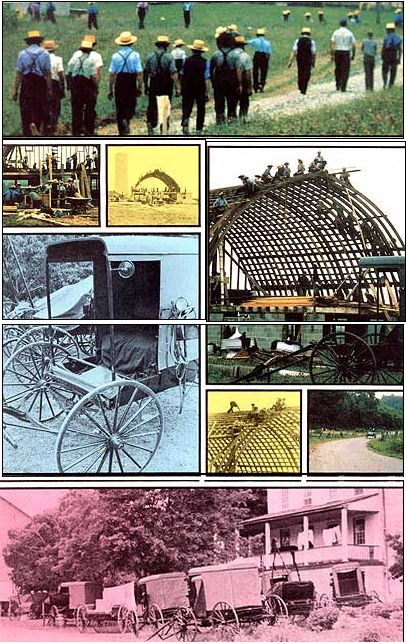

It wonders me immense: When will we learn that none of the bureaucracy-ridden programs of Big Government, none of our loophole-riddled insurance policies, and none of our fuzzy-brained"social agencies" . . . will ever yield one-millionth the personal security, concern for the individual, and care of the earth . . . as a single, old-fashioned, community barn raising?
Standing there, you'd think the clock had been turned back a century. It is 7:00 a.m. and-in the gently rolling farmlands of Lancaster County, Pennsylvania-this country lane is filled with horse-drawn buggies. As the old-time vehicles pass, we can see that the men and boys inside are all clad exactly alike in simple roughspun shirts, black suits, and straw boaters . . . while the women and girls wear long-rather formal-dresses and prim white caps. These people are Amish, and they're going to a party: a barn raising.
One by one, the buggies pull in at the Eshe farm just down the road. There the women unload pans of roasting chicken and baskets of other food and lug the containers into the house, where they'll spend the rest of the morning cooking dinner. Meanwhile, the men and boys (although never removing their boaters) take off their jackets and fold them neatly on the buggy seats. Then, clutching hammers and saws, they head for the barn . . . or what will be the barn. (Right now the soon-to-be structure is still only a concrete-block foundation and stacks of weathered boards taken from an old barn in another town.)
The men-gesturing and talking quietly-gather into little groups. After a few minutes, the small knots of laborers break up and everybody starts to work.
The air is filled with the squalling protests of old nails being yanked out of planks as teenagers attack the piles of reclaimed lumber with reversed claw hammers. While some of the men begin to saw floor joists to length with raspy strokes, others hand the boards up to men already standing atop the foundation. Soon all the rest of the sounds are drowned out by the increasing rat-a-tat-tat of hammers toenailing joists into position. It is apparent-even to the casual observer-that these Amishmen know how to build barns!
The Amish are a religious sect whose roots stretch all the way back to the Protestant Reformation. Their fundamentalist movement began in Switzerland in 1525, and later took the name "Mennonites". But in Germany during the late 1600's, a Mennonite named Jacob Amman decided that the religion was backsliding and started his own reform movement: the Amish. Then, beginning in 1698, his people emigrated from the Palatinate region of Bavaria to southeastern Pennsylvania and settled in what is now Lancaster County.
The descendants of those early settlers have changed little during the intervening 280 years. The peace-loving Amish continue to live their religion . .. . a religion which emphasizes self-reliance. They reject welfare in all its forms, they do not participate actively in government, and they refuse to serve in the armed forces. (You get some inkling of Amish feelings about the military when you learn that the men still fasten their jackets and vests with hooks and eyes instead of buttons . . . solely because the military uniforms of the 1600's featured ornate buttons!)
The Amish are highly advanced farmers. They were routinely practicing crop rotation long before there was any such a thing as a county agent in this country, and the yield per acre in Lancaster County is among the highest in the nation.
Furthermore, in living their religion, the Amish stick close to the Bible . . . which says nothing at all about electricity or automobiles or tractors (much less television). For that reason, these conservative people avoid such things. One of their bishops has been quoted as saying, "A tractor gets the work done more quickly, but horses and the love of hard work keep us nearer to God."
The Amish may handle their tasks the hard way, but they definitely do get them done. They make their own clothes, grow their own food and sell the surplus, pass along useful items such as furniture and harness from generation to generation, work hard, speak softly, and live very well. They like to work with wood, and they learn the niceties of barn-building at an early age.
Today, at the Eshe farm, a hundred Amish families are donating their time to raise a barn. And the structure is going up fast. Look! It isn't even noon yet and, already, the main framing timbers are in place . . . with 50 men clinging to them like flies, nailing down rafters, and sawing off ragged ends. Older gentlemen on the ground make themselves useful by passing up a stream of boards to the more agile members of the crew.
Inside the farmhouse the women gossip happily as they roast mountains of chicken, boil bushels of potatoes, and prepare the rest of the midday feast . . . Pennsylvania Dutch cooking at its best! As the steaming dishes come out of the kitchen, the young girls begin to shuttle huge plates of food out to the long table set up in the yard.
Noon! Everything stops, and the men come trooping down the lane to the farmhouse. Laughing and joking, they pile their plates with chicken and potatoes and vegetables and seven sweets and seven sours and pies and cakes and an almost bewildering selection of side dishes. Between bites they swap stories about other barn raisin's, and livestock auctions, and who had a buggy wreck last week, and who's courting these days, and . . . . At the end of the hour the men plunk down their empty plates, pat their bulging stomachs, and head back to the barn again.
That's the signal for the women to gather up and start washing the acres of crockery, while the girls fill milk cans with fruit juices and load platters with cookies in preparation for a 4 o'clock "midafternoon" break. Small children play in a nearby sandpile . . . at times engrossed in their (homemade) toys, at other times making new friends among the horde surrounding them (Amish families average eight children each), and sometimes simply watching the huge barn almost magically take shape before their eyes. There is no fighting or crying and no need for an adult to supervise them.
All too soon the day ends, and the sun slides down behind the horizon. In front of the farmhouse, Amish families regretfully wave goodbye, count children, and climb into their buggies. A stocky, bearded farmer clicks his tongue, flicks the reins, and the first horse-drawn vehicle moves off down the lane. Within minutes, the yard is empty.
But-in just one day-the Eshe farm has gained a structure . . . a brand-new barn which stands silhouetted against the afterglow from the west as-if you will-a monument to the brother- and sisterhood of (Amish) humankind. And all it cost the Eshe family was a little money for a concrete block foundation and some used lumber.
There are worse ways to live . . . as, unfortunately, far too many people know all too well.
|
 |
|
|